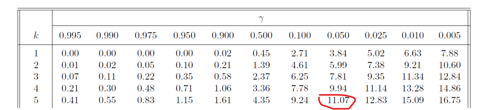
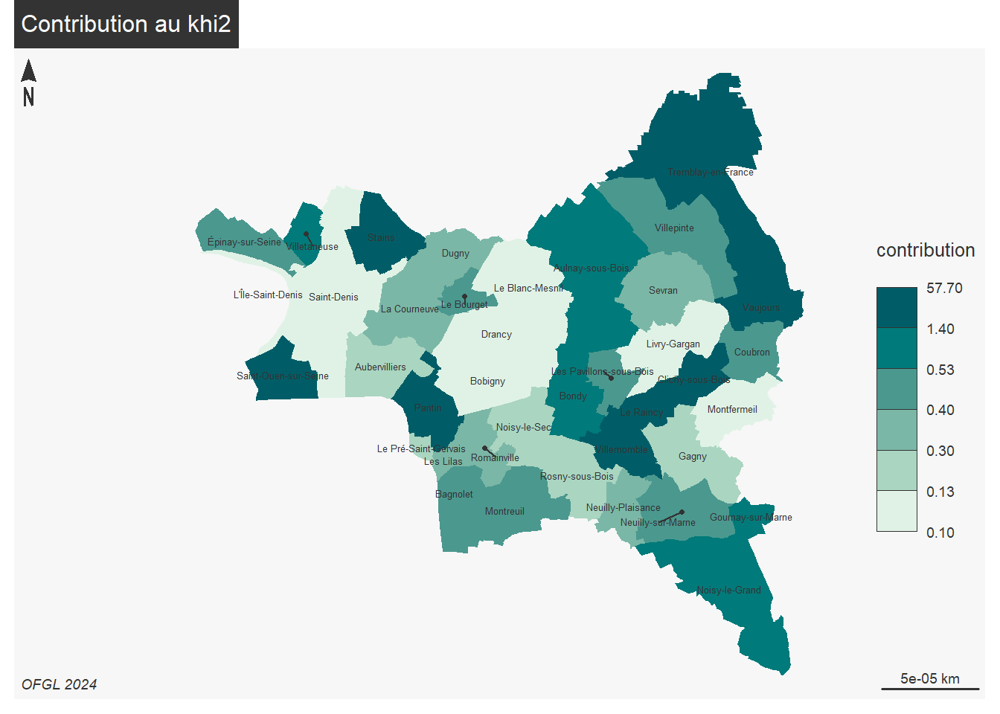

Statistiques bi variées - khi 2
1 Déroulement
1.1 Données d’exemple
hypothèse : relation entre les villes et le montant par habitant de quelques agrégats
l’hypothèse nulle (H0) : indépendance entre villes et agrégats
Deux distributions de variables de catégorie.
Pour récupérer les données, utiliser le site de l’OFGL comme vu le cours précédent

Proposition d’agrégats :
Annuité de la dette (= poids de la dette)
Dépenses d’équipement
Dotation globale de fonctionnement
Frais de personnel
Impôts locaux
Ces 5 agrégats sont représentatifs de l’état des finances de chaque commune.
1.2 Différentes étapes
Tableau de contingence
calcul du khi2
comparaison avec le khi2 théorique
2 Tableau de contingence
Au sens anglais du terme, ce qui peut exister
2.1 Création
Utiliser l’outil de table dynamique (dans le menu données) pour le créer

Résultat attendu :
2.2 Analyse d’un tableau de contingence
Il faut présenter les sources, la structure et le contenu du tableau.
Lister les questions susceptibles d’être posées, notamment en étudiant les fréquences conditionnelles
2.2.1 Format conditionnel

Cet outil est-il utile ici ?
2.2.2 Fréquences conditionnelles en ligne et colonne
Pour pouvoir comparer les villes, chaque groupe est ramené à une même base égale à 100.
savoir-faire tableur
- Objectif : saisir une seule cellule et étendre la formule.
Quel élément fixer, ligne ou colonne ?(raccourci clavier F4)

- utilisation du format %

Analyse après avoir mis le format conditionnel.
- Quelles sont les agrégats qui varient le plus entre les villes ?
Les écarts à la moyenne par agrégat sont peut-être plus parlants
- pour pouvoir raisonner sur le graphique, il est nécessaire de poser un filtre sur quelques villes déjà repérées pour leur originalité (exemple pour le 93 : Tremblay en France et Le Raincy)

Qu’apporterait une étude des fréquences conditionnelles en colonnes ?
3 Tableau de contingence : correction
Beaucoup de rendus et … beaucoup de mauvaises notes

3.1 Définition des variables
- Il ne s’agissait pas de décrire les variables du graphique

La bonne réponse correspondait au cours :
- exemple 1 : au moins, c’est clair
- Le plus complet
- le moins clair

- le plus court
- on y est presque


3.2 Ecart à la moyenne des fréquences par commune
3.2.1 Pas un déficit
Attention, dans ce cas une valeur négative n’est pas un déficit !

3.2.2 Pourquoi calculer au niveau départemental ?
- exemple 1

- exemple 2
4 Khi2 : un exemple sur un dé truqué
Le dé est-il truqué ?
face <- seq(1,6)
effectif <- c(15,7,4,11, 6, 17)
total <- sum(effectif)
knitr::kable(data.frame(face,effectif))| face | effectif |
|---|---|
| 1 | 15 |
| 2 | 7 |
| 3 | 4 |
| 4 | 11 |
| 5 | 6 |
| 6 | 17 |
Le nombre total de lancers est de 60.
4.1 Hypothèse d’indépendance
hypothèse H0 : le dé n’est pas truqué (il y a indépendance entre la face et le nombre de fois où elle sort)
4.2 Effectifs théoriques
Sur le total des lancers (60), chaque face pourrait sortir 10 fois.
effectifThéorique <- rep (10,6)
df <- data.frame(face, effectif, effectifThéorique)
knitr::kable(df)| face | effectif | effectifThéorique |
|---|---|---|
| 1 | 15 | 10 |
| 2 | 7 | 10 |
| 3 | 4 | 10 |
| 4 | 11 | 10 |
| 5 | 6 | 10 |
| 6 | 17 | 10 |
4.3 Calcul du khi2
distance entre effectifs théoriques et observés
Elle se mesure avec le khi2
On calcule l’écart, puis le carré de cet écart et on pondère par l’effectif théorique.
## [1] 5 -3 -6 1 -4 7## [1] 25 9 36 1 16 49## [1] 2.5 0.9 3.6 0.1 1.6 4.9## [1] 13.64.4 Test du khi2
4.4.1 Paramètres du test
- degré de liberté : 5
C’est le nombre de valeurs possibles -1 (car on peut déterminer la 6e valeur à partir des 5 autres)
- Pour un risque à 0,05 (5 chances sur 100 de se tromper)
4.4.2 Résultat
Lecture dans la table du khi2

Le khi2 théorique est de 11,07, il est donc inférieur au khi2 observé (13,6).
Quand le khi2 théorique est inférieur, le test est rejeté.
Le test est rejeté avec
un risque de 5 % (on se trompe 5 fois sur 100)
mais on aurait pu aller jusqu’au risque de 2.5 % (2,5 chances de se tromper sur 100)
Donc, le dé est truqué.
Version R
## face effectif effectifThéorique
## 1 1 15 10
## 2 2 7 10
## 3 3 4 10
## 4 4 11 10
## 5 5 6 10
## 6 6 17 10##
## Chi-squared test for given probabilities
##
## data: df[, 2]
## X-squared = 13.6, df = 5, p-value = 0.018365 Mise en pratique sur les agrégats financiers
5.1 Ennoncer l’hypothèse H0
Il n’y a pas de lien entre les villes et la sélection d’agrégats financiers retenue.
5.2 Effectif théorique
La première case reçoit la formule :
- (total lg / total) * total colonne
C’est ce qu’on appelle également le produit des marges


5.3 Ecarts entre observés et théoriques
Que signifie une valeur zéro ?
Utiliser la notion
- sur représentation / sous représentation
Sur Tremblay, on observe une sur-représentation des impôts locaux et des frais de personnel et une sous-représentation de la DGF. C’est le contraire sur Clichy sous Bois. On voit également bien l’importance des impôts locaux au Raincy.
A noter que la ville d’Aulnay sous Bois se rapproche du modèle défini par le hasard.
Bref, les villes semblent très différentes.
5.4 Le Khi2
Le khi2 va permettre de valider le rejet de l’hypothèse d’indépendance.
rappel : métrique euclidienne plutôt que les valeurs absolues on utilise les carrés
5.4.1 Le Khi2 partiel
On met les écarts rapportés à la valeur théorique d’indépendance au carré (on mesure ainsi une distance)
on divise par l’effectif théorique (on relativise)

5.4.2 Le Khi2
C’est le total des khi2 partiels (dans notre exemple 768)
Ici le montant du khi2 est très élevé. On sait tout de suite qu’il sera supérieur au khi2 théorique.
Quel est le maximum dans le tableau ?
5.4.3 Test du Khi2
On définit :
- degré de liberté lg -1 * col -1
5 agrégats et 40 villes
## [1] 156Le risque est extrêmement faible puisque nous sommes hors tableau.
- risque 1, 5 et 10 %
Sur internet, dans n’importe quelle table, on cherche les valeurs correspondantes.
https://jeanpaullaurent.fr/media/docetud/table_khi2_complete.pdf
5.4.4 Rejet de H0 ou pas
HO hypothèse d’indépendance. son rejet implique qu’il y a une relation.
Les villes et les agrégats financiers ont une relation avec une marge d’erreur faible puisque le khi2 augmente quand le risque d’erreur baisse.
Les logiciels de stats proposent le risque limite, la valeur de bascule entre le rejet et l’acceptation de l’hypothèse nulle.
6 Sous R, vérification des calculs
6.1 Constitution de la table de contingence
data <- read.csv("data/data93_2024.csv")
data <- data [, c("Nom.2024.Commune", "Agrégat", "Montant.en...par.habitant")]
agregat <- names(table(data$Agrégat))
agregat <- agregat [c(2,14, 23, 36, 38)]
data <- data [data$Agrégat %in% agregat,]
jointure <- data [data$Agrégat == agregat [1], c(1,3)]
names(jointure) [2] <- agregat [1]
agregat <- agregat [-1]
for (a in agregat){
tmp <- data [data$Agrégat == a, c(1,3)]
names(tmp) [2] <- a
jointure <- merge(jointure, tmp, by="Nom.2024.Commune")
}
summary(jointure)## Nom.2024.Commune Annuité de la dette Dépenses d'équipement
## Length:40 Min. : 4.164 Min. : 130.6
## Class :character 1st Qu.: 75.868 1st Qu.: 316.6
## Mode :character Median :155.981 Median : 441.8
## Mean :141.625 Mean : 468.1
## 3rd Qu.:197.103 3rd Qu.: 527.5
## Max. :369.778 Max. :1161.2
## Dotation globale de fonctionnement Frais de personnel Impôts locaux
## Min. : 5.355 Min. : 459.0 Min. : 761.6
## 1st Qu.:126.346 1st Qu.: 865.4 1st Qu.: 972.2
## Median :241.123 Median : 959.8 Median :1080.0
## Mean :261.720 Mean : 979.8 Mean :1170.1
## 3rd Qu.:378.380 3rd Qu.:1042.9 3rd Qu.:1344.6
## Max. :924.843 Max. :1766.1 Max. :2331.0##
## Pearson's Chi-squared test
##
## data: jointure[, -1]
## X-squared = 11608, df = 156, p-value < 2.2e-166.2 Cartographie : contribution au khi2
## Linking to GEOS 3.13.1, GDAL 3.11.4, PROJ 9.7.0; sf_use_s2() is TRUE## Reading layer `communes93' from data source
## `C:\Users\bmaranget\01_stat\data\communes93.geojson' using driver `GeoJSON'
## Simple feature collection with 307 features and 48 fields
## Geometry type: GEOMETRY
## Dimension: XY
## Bounding box: xmin: 2.288278 ymin: 48.80725 xmax: 2.6033 ymax: 49.01233
## Geodetic CRS: WGS 84geo <- geo [!is.na(geo$ref.INSEE), c("name", "ref.INSEE")]
jointure <- merge(geo [, c("name")], df, all.x=T, by = "name")
mf_choro(jointure, var = "contribution", border = NA, leg_pos = "right")
mf_label(jointure, var="name", cex = 0.4, overlap = F)
mf_layout("Contribution au khi2", "OFGL 2024" )
## The scale bar does not work on unprojected (long/lat) maps.7 Correction de l’exercice sur le Khi2
7.1 Rappel de la consigne
une description de la donnée (agrégats (au moins 5) et communes (au moins 10), attention il s’agit de deux variables de catégorie / classe
poser l’hypothèse nulle
calculer le khi2 et la contribution au khi2 (en %), faire un graphique de fréquence de la contribution au khi2 (en %).
analyser cette contribution : que signifie une forte contribution ?
7.1.1 Fallait-il comparer khi2 théorique et khi2 observé ?
Il n’était pas nécessaire de chercher si le test était significatif ou non.
Les khi2 observés étaient-ils des chiffres importants ?
Si on observe une table de khi2, quelle est la grandeur des chiffres ?
7.2 Analyse de la contribution
L’erreur surprise

L’erreur intéressante : confusion significativité du test et importance de la contribution


7.3 Le graphique
consigne : faire un graphique de fréquence de la contribution au khi2 (en %)


7.4 Correction complète
Cas de la communauté d’agglo de Cergy-Pontoise
Il y a ici croisement de deux variables de type classe / catégorie : - Communes (effectif = 12) - Agrégats (effectif = 3), modalités = dépense de fonctionnement / frais de personnel / impôts locaux
Comme il s’agit de deux variables qualitatives, on utilise un test de khi2 Celui va nous permettre de tester l’hypothèse H0, à savoir les variables communes et agrégats sont indépendantes.
Mise en forme de la donnée
## [1] "Exercice"
## [2] "Outre.mer"
## [3] "Code.Insee.2024.Région"
## [4] "Nom.2024.Région"
## [5] "Code.Insee.2024.Département"
## [6] "Nom.2024.Département"
## [7] "Code.Siren.2024.EPCI"
## [8] "Nom.2024.EPCI"
## [9] "Strate.population.2024"
## [10] "Commune.rurale"
## [11] "Commune.de.montagne"
## [12] "Commune.touristique"
## [13] "Tranche.revenu.par.habitant"
## [14] "Présence.QPV"
## [15] "Code.Insee.2024.Commune"
## [16] "Nom.2024.Commune"
## [17] "Catégorie"
## [18] "Code.Siren.Collectivité"
## [19] "Code.Insee.Collectivité"
## [20] "Siret.Budget"
## [21] "Libellé.Budget"
## [22] "Type.de.budget"
## [23] "Nomenclature"
## [24] "Agrégat"
## [25] "Montant"
## [26] "Montant.en.millions"
## [27] "Population.totale"
## [28] "Montant.en...par.habitant"
## [29] "Compte.2024.Disponible"
## [30] "code_type_budget"
## [31] "ordre_analyse1_section1"
## [32] "ordre_analyse1_section2"
## [33] "ordre_analyse1_section3"
## [34] "ordre_analyse2_section1"
## [35] "ordre_analyse2_section2"
## [36] "ordre_analyse2_section3"
## [37] "ordre_analyse3_section1"
## [38] "ordre_analyse3_section2"
## [39] "ordre_analyse3_section3"
## [40] "ordre_analyse4_section1"
## [41] "annee_join"
## [42] "Population.totale.du.dernier.exercice"data <- data [, c(16, 24, 28)]
data <- data [data$Agrégat %in% c("Dépenses de fonctionnement", "Frais de personnel","Impôts locaux"),]
eclat <- split(data, list(data$Agrégat))
jointure <- merge(eclat [[1]], eclat [[2]], by = "Nom.2024.Commune")
jointure <- merge(jointure, eclat [[3]], by = "Nom.2024.Commune")
jointure <- jointure [, c("Nom.2024.Commune", "Montant.en...par.habitant.x", "Montant.en...par.habitant.y", "Montant.en...par.habitant")]
names(jointure) <- c("ville","fonctionnement", "personnel", "impots")
head(jointure)## ville fonctionnement personnel impots
## 1 Boisemont 812.7 283.7 583.9
## 2 Cergy 1250.1 818.7 835.4
## 3 Courdimanche 1117.1 737.2 818.8
## 4 Éragny 1187.1 797.5 838.7
## 5 Jouy-le-Moutier 1174.2 799.2 878.7
## 6 Menucourt 934.5 612.7 794.8##
## Pearson's Chi-squared test
##
## data: data
## X-squared = 279.3, df = 22, p-value < 2.2e-16test <- chisq.test(data)
chi2partiel <- apply((test$observed - test$expected)^2/test$observed, 1, sum)
contrib <- round (chi2partiel / sum(chi2partiel), 2)*100
hist(contrib, xlab = "contribution au khi2 (%)", ylab = "Nb de communes", main = "Fréquence des contributions au khi2")
par(mar = c(12,4,2,2))
barplot(contrib, las = 2, main = "Communes et contribution au khi2 (%)", ylab = "Contribution au khi2 (%)")
Analyse :
Boisemont et Neuville sur Oise contribuent fortement au khi2. Boisement est un petit village qui ne doit pas avoir beaucoup d’agent. Neuville sur Oise est un peu plus gros mais a des impôts élevés. Dans les deux cas, ces deux communes sont différentes des autres communes de la ca de Cergy.
## fonctionnement personnel impots
## Boisemont 3.80 -7.10 1.98
## Cergy 0.59 2.70 -3.09
## Courdimanche -0.43 1.97 -1.26
## Éragny -0.24 2.72 -2.17
## Jouy-le-Moutier -0.96 2.50 -1.14
## Menucourt -1.81 0.49 1.65
## Neuville-sur-Oise -1.25 -6.00 6.81
## Osny -1.45 2.26 -0.35
## Pontoise -0.51 -0.36 0.90
## Puiseux-Pontoise 1.33 -5.62 3.51
## Saint-Ouen-l'Aumône 1.32 0.05 -1.56
## Vauréal 0.39 2.96 -3.10Voir l’outil stat locale de l’insee.
8 En guise de conclusion : pourquoi le khi2 ?
8.1 Les fréquences conditionnelles suffisent-t-elles ?
Comparaison des 2 tableaux
Fréquence conditionnelle en ligne
La distance entre les données observées et théoriques

Estimation des écarts fondés sur la pondération des masses
L5GEABIM Analyses bivariées et multivariées